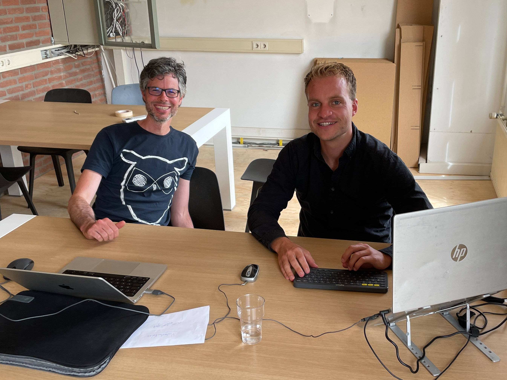

10 Voorbij
de horizon
De toekomst aan een zijden draadje,
teleurstelling, trots en
over op plan B.

Daar staan we dan. Aan de vooravond van een gloednieuw hoofdstuk uit de expat experience, waarbij we het stukje ‘nomad’ uit ‘digital nomad’ eer aan gaan doen. Op dit moment vlieg ik de Atlantische oceaan over en ik kan niet wachten om na twee niet altijd eevoudige jaren een nieuwe start te maken en de vleugels te spreiden. Nadat mijn wereldreis in 2015 erop zat, was ik vastberaden om ooit de andere kant van de aarde te zien, maar naarmate de jaren vorderden verschoof deze lang gekoesterde wens naar de achtergrond. Eerst leek het een nieuw bestaan te gaan worden in Zweden toen ik daar met mijn vorige vriendin heen verhuisde. Nadat deze relatie over ging en het leven een behoorlijk rommeltje was, was het bezig zijn met mijn carrière een fijne manier om de weg omhoog weer te vinden. Die inzet wierp zijn vruchten af. In tegenstelling tot de PhD sollicitatieronde afgelopen jaar, waarbij, zoals jullie in de vorige blog hebben kunnen lezen, geen enkele universiteit mij uitnodigde op gesprek, liep ik dit jaar op een haar na een PhD mis. Het was afgelopen mei en ik was haast vergeten dat ik had gesolliciteerd bij WildDrones voor een positie over het monitoren van Afrikaanse wilde dieren met drones, toen ik een bericht kreeg van Fabio Remondino namens FBK in Trento (Italië). Na een aantal gespreksrondes waren er nog maar twee kandidaten over. Ik hield het niet meer van de spanning tot ik jammer genoeg een mailtje kreeg dat ze voor de andere kandidaat hadden gekozen. Balen als een stekker natuurlijk, maar alsnog was ik hartstikke trots dat ik bij de laatste twee was gekomen en had kunnen laten zien wat ik in huis heb. Wat hangt je leven dan aan een zijden draadje. Ik besefte me eens temeer dat, mocht er in de toekomst een PhD of wat dan ook komen, dat dan het vrije leven wat ik nu leid, plotseling voorbij zou kunnen zijn. Mijn huidige baas, Ramon, die ik help website BOX21 te maken maakt het niet uit of ik in de ochtend, in de avond of ik het weekend werk, of ik een paar dagen op vakantie ga of vanaf welke plek ik dan ook werk. Ondertussen steeg in Barcelona het kwik richting de 35 graden en stroomde de stad langzaam leeg. Ook in Nederland maakten mensen zich op voor de zomervakantie, en ik had nog geen flauw idee wat mijn plannen waren.
 Wat ik wel wist was dat ondanks de mooie programmeer stappen en een leuke salarisverhoging er wonend in de dure stad Barcelona nog wat meer programmeerervaring nodig was, om dusdanig te gaan verdienen dat ik ook echt veel leuke dingen kon gaan ondernemen. Plots dacht ik aan die lang gekoesterde wens om dat ene continent te bezoeken. Zou het dan toch….. die wens die zich ergens heel diep had verstopt. Er kwam waarschijnlijk geen beter moment dan nu en voor ik het wist was daar het plan om te verhuizen naar dit onbekende continent. Een land stak er voor mij met kop en schouders bovenuit. Hier was het goedkoop, sprak men spaans en was het relatief veilig. Met mijn diploma Spaans B1 op zak zou ik eindeloos Spaans kunnen oefenen. Tring, tring….. 'Mam, we gaan nu boeken', belde ik naar Nederland. Een uurtje later lag alles vast en was er geen weg meer terug.
Wat ik wel wist was dat ondanks de mooie programmeer stappen en een leuke salarisverhoging er wonend in de dure stad Barcelona nog wat meer programmeerervaring nodig was, om dusdanig te gaan verdienen dat ik ook echt veel leuke dingen kon gaan ondernemen. Plots dacht ik aan die lang gekoesterde wens om dat ene continent te bezoeken. Zou het dan toch….. die wens die zich ergens heel diep had verstopt. Er kwam waarschijnlijk geen beter moment dan nu en voor ik het wist was daar het plan om te verhuizen naar dit onbekende continent. Een land stak er voor mij met kop en schouders bovenuit. Hier was het goedkoop, sprak men spaans en was het relatief veilig. Met mijn diploma Spaans B1 op zak zou ik eindeloos Spaans kunnen oefenen. Tring, tring….. 'Mam, we gaan nu boeken', belde ik naar Nederland. Een uurtje later lag alles vast en was er geen weg meer terug.

Ik had nog willen vertellen over de afgelopen maanden. Dat ik bij de rugby INEF Barcelona mijn eerste wedstrijd mocht spelen tegen Engelsen op Campo La Foixarda in Barcelona. In een blog kan je natuurlijk alles een beetje aandikken maar ik overdrijf niet, bij de eerste bal die ik ontving zette ik het op een lopen en drukte de bal over de achterlijn. Een try! Mvp mvp (most valuable player), werd er geroepen. Het was een onvergetelijke ervaring en een geweldig slotstuk na een jaar rugby in Barcelona. Bij rugby is respect voor de tegenstander een heel belangrijk onderdeel. Na afloop van de wedstrijd zaten de spelers van ons en van de tegenstander dus ook gemixt aan een lange tafel gevuld met bier. Omdat sommige Spanjaarden nogal gebrekkig Engels spreken en de meeste Engelsen ook geen Spaans spreken kon ik verschillende keren helpen vertalen.
 In april, toen de drukte op komst was, ontsprong ik Barcelona een weekje voor een heerlijke wandelvakantie. Ik wandelde een deel van de beroemde Camino, wandelpaden die als haarvaten door Europa lopen en uitkomen in Santiago de Compostela. Zelf liep ik de Camino del Norte maar wel enkel van Santander tot Oviedo in het noorden van Spanje. Een mens heeft niet veel nodig. Rugzak op en lekker wandelen. Het was nog vroeg in het seizoen en af en toe was ik de enige die overnachtte in de albergues. Gelukkig kwam ik nog iemand tegen uit Hongkong en iemand uit Ierland. Wanneer je een jaar lang bijna altijd in die drukte van de stad leeft, dan pas merk je hoe heerlijk het is om daar even aan te kunnen ontsnappen.
In april, toen de drukte op komst was, ontsprong ik Barcelona een weekje voor een heerlijke wandelvakantie. Ik wandelde een deel van de beroemde Camino, wandelpaden die als haarvaten door Europa lopen en uitkomen in Santiago de Compostela. Zelf liep ik de Camino del Norte maar wel enkel van Santander tot Oviedo in het noorden van Spanje. Een mens heeft niet veel nodig. Rugzak op en lekker wandelen. Het was nog vroeg in het seizoen en af en toe was ik de enige die overnachtte in de albergues. Gelukkig kwam ik nog iemand tegen uit Hongkong en iemand uit Ierland. Wanneer je een jaar lang bijna altijd in die drukte van de stad leeft, dan pas merk je hoe heerlijk het is om daar even aan te kunnen ontsnappen.
 Mijn 3 broers kwamen op bezoek in Barcelona. Door problemen bij Transavia leken ze slechts van vrijdag tot zondag te kunnen komen, maar gelukkig had mijn broertje Sander daar een stokje voor gestoken want hij had al gezien dat er ook vluchten vertrokken op woensdag. We leefden als echte toeristen en bezochten de highlights van Barcelona. W-hotel, Raval, Port Olympic, Castel Montjuic en op de zondag nog een mooie trip naar het bergstadje Montserrat. Hoe gaaf is het dan dat je je broers kan laten zien hoe jij in het buitenland leeft. Een spel dat ons vroeger met de paplepel is ingegoten is het brabantse ‘rikken’. Het kwam daarbij goed uit dat we met zijn vieren waren en nadat we uitzichtpunt de bunkers hadden bezocht gingen de kaarten op tafel bij terras gevuld met Spaanse mensen. Het was weer even net als ‘vroeger’ op de camping.
Mijn 3 broers kwamen op bezoek in Barcelona. Door problemen bij Transavia leken ze slechts van vrijdag tot zondag te kunnen komen, maar gelukkig had mijn broertje Sander daar een stokje voor gestoken want hij had al gezien dat er ook vluchten vertrokken op woensdag. We leefden als echte toeristen en bezochten de highlights van Barcelona. W-hotel, Raval, Port Olympic, Castel Montjuic en op de zondag nog een mooie trip naar het bergstadje Montserrat. Hoe gaaf is het dan dat je je broers kan laten zien hoe jij in het buitenland leeft. Een spel dat ons vroeger met de paplepel is ingegoten is het brabantse ‘rikken’. Het kwam daarbij goed uit dat we met zijn vieren waren en nadat we uitzichtpunt de bunkers hadden bezocht gingen de kaarten op tafel bij terras gevuld met Spaanse mensen. Het was weer even net als ‘vroeger’ op de camping.
 In mei liep zowel de cursus Spaans als de programmeer competitie Fathomnet af. Dat was een behoorlijke opluchting omdat ik achteraf gezien alles bij elkaar toch wat te veel hooi op de vork had genomen. Regelmatig sliep ik slecht en als je steeds een beetje van alles aan het doen bent dan is dat ook helemaal niet efficiënt. Ik hoop dat deze drukke periode een wijze les is geweest voor de toekomst. De laatste maand brak aan in Barcelona. Er was veel tijd en wat was het heerlijk om even alleen te richten op werken aan BOX21 in combinatie met Salsa en Bachata dansavondjes. Was ik met kerst nog weken aan het worstelen om een logo te vervangen, inmiddels is het gelukt om een notificatiepagina te bouwen. Het werk wordt steeds leuker omdat de puzzelstukjes steeds beter vallen en Ramon en ik meer op hetzelfde niveau komen. Ramon is echt een geweldige collega. Omdat box21 slechts uit hem en mij bestaan kunnen we zo snel schakelen. Ramon stelde bijvoorbeeld voor om in het Engels te praten om zo ons Engels te onderhouden. Nu praten we dus in het Engels. En mij leek het nuttig om bij een schermopname de videocamera aan te zetten zodat je extra non-verbale informatie krijgt en het werk ook een stukje persoonlijker maakt. Zo komen we steeds tot een betere manier van samenwerken waardoor we met veel energie aan de slag kunnen.
 Nog een laatste lunch met huisgenoten Tommasso, Jessica en Stephanie. Manuela, Koen, Erika, Greg, Daniel, Annabela, Esther, Dorien, Jordi, Anni, Jeromy, Jeromy, Isabella en Wendy. Het was geweldig om jullie te mogen ontmoeten en samen zoveel uren op de dansvloer te mogen spenderen. Bedankt voor de prachtige uurtjes in Antilla, Dio, Poblenou, Park industrial, Vivaldi. Iedere avond was er ergens in Barcelona wel weer een feestje. Op mijn afscheidsavond ontving ik van een meid zelfs nog een mooi schilderijtje met de skyline van Barcelona. Bij deze ontzettend bedankt!
Nog een laatste lunch met huisgenoten Tommasso, Jessica en Stephanie. Manuela, Koen, Erika, Greg, Daniel, Annabela, Esther, Dorien, Jordi, Anni, Jeromy, Jeromy, Isabella en Wendy. Het was geweldig om jullie te mogen ontmoeten en samen zoveel uren op de dansvloer te mogen spenderen. Bedankt voor de prachtige uurtjes in Antilla, Dio, Poblenou, Park industrial, Vivaldi. Iedere avond was er ergens in Barcelona wel weer een feestje. Op mijn afscheidsavond ontving ik van een meid zelfs nog een mooi schilderijtje met de skyline van Barcelona. Bij deze ontzettend bedankt!

 Voor de grote reis verbleef ik nog twee weken in Bavel, even terug in de vertrouwde omgeving. Uitgerekend in deze twee weken vond ook ons weekendje van vriendengroep de neefjes uit Bavel plaats. Het is dan altijd even spannend of je er nog wel tussen past omdat ik een totaal ander leven heb dan mijn vrienden waarvan de meeste lekker in de buurt van Bavel blijven plakken. Maar het was echt onwijs gezellig in een prachtig landhuis in de Belgische Ardennen. En zo zit The Expat Experience deel 1 er alweer op. Een moment waar ik mij zo erg op heb verheugd gaat nu van start. Het wordt een waanzinnige ervaring. Ik kan niet wachten. Spring je mee, dan laat ik je zien wat voor moois de wereld te bieden heeft. Net als in 2015 toen ik ook een blog bijhield en schreef voor vertrek:
Voor de grote reis verbleef ik nog twee weken in Bavel, even terug in de vertrouwde omgeving. Uitgerekend in deze twee weken vond ook ons weekendje van vriendengroep de neefjes uit Bavel plaats. Het is dan altijd even spannend of je er nog wel tussen past omdat ik een totaal ander leven heb dan mijn vrienden waarvan de meeste lekker in de buurt van Bavel blijven plakken. Maar het was echt onwijs gezellig in een prachtig landhuis in de Belgische Ardennen. En zo zit The Expat Experience deel 1 er alweer op. Een moment waar ik mij zo erg op heb verheugd gaat nu van start. Het wordt een waanzinnige ervaring. Ik kan niet wachten. Spring je mee, dan laat ik je zien wat voor moois de wereld te bieden heeft. Net als in 2015 toen ik ook een blog bijhield en schreef voor vertrek:
Op zoek naar avontuur. Over land, onze planeet over en met zo min mogelijk geld gaan voor de rijkste ervaringen. De veelzijdigheid van reizen waarbij onverwachts het meest fantastische of verschrikkelijke kan gebeuren. Meeten met backpackers, locals of niemand. Af van het bekende pad. De gok nemen en winnen of verliezen.